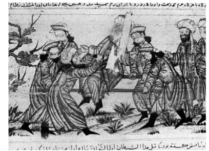
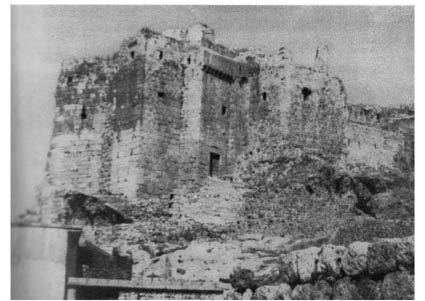

FOTOĞRAFLAR
Lebey de Batilly’nin Traicte adlı eserinin kapağı

Nizamülmülk suikastı.
Yazarlar, katipleri ve refakatçileriyle birlikte.
Hülagü, İsmaili kalelerini zapt etme yolunda.
Hülagü.
Masyaf Kalesi’nden bir yazıt.
Kain Kalesi.
Kain surları.
Lemeser Kalesi.
Alamut Kayalığı.
Meymundiz Kalesi.
Isfahan yakınlarındaki Bozi Kalesi.

Masyaf Kalesi.
Halep Kalesi.